S2-CAR: Segmentation-Supervised Complexity-Adaptive Recommendation 是一篇面向序列推荐的长行为建模论文。一作 Linjiang Guo 来自 University of Technology Sydney，合作机构包括 City University of Macau 和 The Education University of Hong Kong。论文入口：arXiv:2606.25415。截至本次核验，arXiv 页面和论文 HTML 未提供专门的官方代码或项目链接；本文只按论文原文、arXiv HTML 与 PDF 中的公式和图表记录方法与实验。
用户交互历史并不是均匀上下文：真实兴趣会在潜在状态中随时间转移，但现有序列推荐模型常把整条序列当成同质上下文，或用固定时间窗口切分，导致真实意图边界错位。这样的错分会在序列中段引入跨意图干扰，并让模型过度依赖短期兴趣信号，难以稳定利用长历史里的有效偏好。
1. 背景和问题
序列推荐的目标是根据用户按时间排列的历史交互预测下一次交互。GRU4Rec、Caser、SASRec、BERT4Rec 等模型分别用循环网络、卷积窗口或自注意力处理这条历史，核心假设都是：给定完整或截断后的序列，模型可以从 token 间关系里学到可用的偏好转移。但 S2-CAR 盯住的不是普通的长序列计算量问题，而是“历史里的兴趣阶段是否被正确分开”。如果一个用户先浏览家电，又快速转去服饰，固定窗口可能把两个意图混在一起；如果用户隔了很久仍在看同一类家电，固定时间间隔又可能把同一个持续兴趣拆成两段。前一种情况会制造 cross-intent noise，后一种情况会制造 context dilution，最后都让模型难以判断哪些中段交互仍然和当前预测有关。
论文的引言用一个很实用的删除实验把这个问题具体化：以 SASRec 为代表，作者随机删除用户历史中最后一段或中间段的一半 item，然后观察 Recall@10 的变化。直觉上，如果中间段确实包含长期偏好，删除它应该损害推荐；但论文观察到，一部分长序列用户删除中间段后性能不降反升，说明模型很可能把中段当成噪声或没有充分利用。相反，删除最后一段会随着序列长度增加带来越来越明显的下降，表明现有模型仍强依赖短期兴趣。这个结果把论文的核心矛盾从“序列太长”推进到“边界不准导致中段信号被污染或忽略”：早期交互不是天然没用，中段交互也不是天然噪声，问题在于模型缺少一个能跟随用户行为动力学变化的 intent boundary。
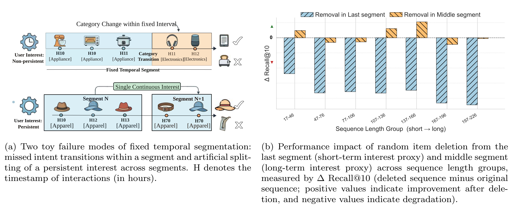
Figure 1 左侧给出两个非常贴近推荐日志的失败例子。上半部分是同一个固定 temporal segment 内发生类别切换，用户从 Appliance 转向 Electronics 后又回到 Appliance，固定段会把不同类别转移压进同一个局部上下文，后续建模时就难以判断哪一部分代表当前意图；下半部分是用户隔了很久仍保持 Apparel 兴趣，但固定时间切分把它拆成两个 segment，导致同一兴趣被重复建模。右侧柱图对应 SASRec 删除实验：删除 last segment 多数带来负向变化，说明短期信号仍被强依赖；删除 middle segment 的影响更复杂，部分长度组接近 0 或变好，说明中段并未被可靠转化为有效长期偏好。图中真正重要的不是某个柱子的绝对高度，而是它证明固定切分会同时制造“混在一起”和“拆得太碎”两类错误，单靠更大的 Transformer 或更多 interest slot 并不能自动消除这种结构性噪声。
这也解释了为什么简单的多兴趣模型不足以解决问题。MIND、ComiRec、MiaSRec、ICSRec 这类模型通常试图从完整历史中抽取多个 interest vector，但它们往往给所有用户或所有 session 分配固定数量的兴趣槽位。真实用户的复杂度却差异很大：有些用户在几个相近类别之间周期性往返，有些用户在短时间内发生剧烈兴趣切换，还有些用户只是在同一兴趣里延续浏览。固定槽位会在简单用户上浪费容量，在复杂用户上又可能不够用；如果 segment 本身来自粗糙时间窗，后续的 multi-interest extraction 还会继承错误边界。S2-CAR 的方法因此分成两个层次：先用连续时间能量衰减找更合理的行为 segment，再根据 segment 数量和冗余程度自适应决定 active interest slots。
从推荐系统落地角度看，S2-CAR 讨论的是召回或精排前的序列表征质量。电商、电影、游戏三个场景的行为密度和时间尺度差异很大：同一用户可能在电影评分场景里一天内连续评价多个相近 item，也可能在电商里隔几天跨品类浏览，还可能在游戏平台上长期围绕同一类型游戏活动。一个固定 30 分钟或 48 小时窗口在这些场景里不可能同时正确。论文的价值是把边界检测从人工时间阈值改成由类别转移、用户历史类别分布和时间间隔共同驱动的 latent energy retention，并把它接入推荐训练，而不是把 segmentation 当成离线预处理小技巧。
2. 方法
S2-CAR 的方法结构可以按论文顺序读成四个模块：Context-Aware Soft-TPP 负责从原始交互流中生成边界；Sequential Inference Encoder 负责用边界感知的 causal Transformer 产生推理期用户表示；Hierarchical Interest Encoder 负责把边界切出的 segment 聚合成多兴趣教师表示；最终训练目标用主推荐 loss、跨路径对比 loss 和兴趣多样性 loss 联合约束。整套设计的关键不是多加一个 encoder，而是把“边界判断”和“服务时的 next-item 表征”解耦：Soft-TPP 先冻结，HIE 只在训练期监督，线上仍走 SIE 的单一路径。
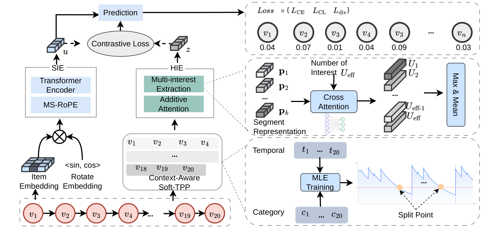
Figure 2 把这条链路画得很清楚。底部原始序列先进入 Context-Aware Soft-TPP，Soft-TPP 根据时间、类别和能量衰减给出 split point；左侧 SIE 把 item embedding、boundary type embedding 和 MS-RoPE 送入 Transformer Encoder，最后走 prediction；中间 HIE 使用同一批边界，把 token 隐状态聚合成 segment representation，再通过 cross attention 抽取多兴趣向量，经过 max/mean pooling 得到结构更平衡的 z；上方 contrastive loss 把 z 和 SIE 的 u 对齐。图右侧还强调了 slot 数量来自 segment count，而不是固定给每个用户同样容量。注意 HIE 的结果没有直接拼到线上打分向量里，这避免了训练期结构先验在推理期变成额外复杂分支，也避免 z 的全局摘要破坏 SIE 对最后可见位置的因果读出。
2.1 Soft-TPP 边界检测
Soft-TPP 的第一步是把用户意图看成连续时间里的能量状态。设第 i 次交互发生在时间 $t_i$，交互之间的 latent intent energy 为 $e(t)$，论文用指数衰减描述它：
符号解释：$e(t)$ 是当前意图在时间 $t$ 的残余能量，$\delta_i$ 是第 i 个位置之后的维度级 decay rate，$t-t_i$ 是距离上一次交互的时间差。这个式子表达的直觉是：一次交互会把当前兴趣状态重新激活，但如果后续时间拉长，或者类别转移暗示兴趣变化，残余能量会下降。论文还把它写成常微分方程：
符号解释：$\odot$ 表示按维相乘，方程说明能量下降速度由 $\delta_i$ 控制。真正有意思的是 $\delta_i$ 不是固定常数，而由相邻类别和历史类别均值共同决定：
符号解释：$h_i^c$ 和 $h_{i-1}^c$ 是当前和前一交互的类别嵌入，$\bar{h}i^c$ 是截至当前位置的类别历史均值，$\phi$ 是 Softplus，$f$ 是 MLP，$\epsilon$ 保证 decay rate 为正。这样，同样的 Electronics 到 Appliances 转移，对长期只看单一类别的用户可能意味着强边界，对经常跨品类浏览的用户则不一定意味着意图断裂。
在 TPP 表达上，事件强度由能量平方和给出，补偿项有闭式形式：
符号解释：$\lambda(t)$ 是下一事件强度，$\Lambda_i$ 是时间区间 $(t_i,t_{i+1})$ 上的 compensator，$\Delta t_i=t_{i+1}-t_i$。作者进一步用类别共现权重 $w(c_i,c_{i+1})$ 调整 likelihood：
符号解释：$\mathcal{P}$ 是非 padding 位置集合，$w(c_i,c_{i+1})$ 对相邻类别关系加权，同类转移权重为 1，异类转移根据类别嵌入余弦相似度经 sigmoid 缩放。训练完成后，Soft-TPP 被冻结，只根据 retention ratio 判定边界：
符号解释：$r_i$ 是每个维度保留能量的平均值，$\tau$ 是数据集级阈值，$b_{i+1}=1$ 表示下一个 item 是新 segment 的开始。这个规则把“时间差长不长”改写成“当前意图能量是否已经耗尽”，因此能处理长间隔同兴趣和短间隔换兴趣两类相反案例。
2.2 边界感知 SIE
SIE 是真正服务 next-item prediction 的路径。Soft-TPP 输出的二值边界标记 $b_i$ 被映射成 boundary type embedding，再加到 item embedding 上：
符号解释：$h_i^v$ 是物品嵌入，$E_B$ 是二值边界嵌入表，$\tilde{h}_i$ 是进入 Transformer 的 token 表示。这一步的设计很轻：它不改 self-attention 的结构，只让模型从第一层就知道某个 item 是否处在新 segment 起点。相比把 segment 作为外部池化结果再拼回去，这种做法保留了标准 causal Transformer 的实现便利。
为了处理短期共现和长期偏好回流，SIE 使用 Multi-Scale Rotary Position Embedding。每个 attention head 使用不同频率尺度：
符号解释：$j$ 是 attention head，$s_j$ 是从 1 到 10 的对数均匀尺度，$b$ 是 RoPE base，$d_h$ 是单头维度。不同 head 对相对距离的敏感度不同，有的更适合短窗口类别转移，有的更适合长距离偏好复现。最终 SIE 从最后有效位置读出 $u=h_N$，并用它做全量 item softmax；这一点很重要，因为它保持了 leave-one-out 评估和线上推理中的因果性，不会用未来 target 的时间戳或类别计算边界。
2.3 HIE 与复杂度自适应多兴趣
HIE 不直接替代 SIE，而是作为训练期教师。给定边界标记，论文用累积和把 item 分到 $K$ 个 segment，然后对每个 segment 做 additive attention：
符号解释：$s_k$ 是第 k 个 segment，$p_k$ 是 segment 表示，$w$ 是可学习查询向量，$\alpha_i$ 表示 segment 内 item 的贡献权重。这里故意丢弃 segment 内顺序，是为了让每个 intent phase 在 HIE 中具有结构等价的地位，避免早期 segment 在 autoregressive chain 里逐层衰减。随后，$P=[p_1,\ldots,p_K]$ 经过 segment-level Transformer，再由 $U_{\max}$ 个 learnable interest queries 做 cross-attention 得到候选兴趣向量 $m_r$。
论文最有辨识度的设计是 active slot 数量不固定：
符号解释：$K$ 是 Soft-TPP 生成的 segment 数，$\rho$ 是压缩比例，$U_{\max}$ 是最大槽位上限。若 $K$ 很大，不代表用户有同样多的 distinct interests，因为同一兴趣可能周期性复现；$\rho<1$ 可以压缩冗余 segment。若行为短而类别切换真实，过度压缩又会合并不同兴趣。模型从 $U_{\max}$ 个候选兴趣中按 $\ell_2$ 范数选择 top $U_{\mathrm{eff}}$ 个 active slots，再用 element-wise max pooling 加 mean pooling 得到 $z$：
符号解释：$A$ 是 active interest slot 集合，max pooling 捕捉各维度最强兴趣信号，mean pooling 保留整体兴趣分布。为了防止 active vectors 收缩到同一方向，论文加了 diversity regularizer：
符号解释：$\tilde{M}$ 是归一化后的 active interest matrix，$I$ 是单位矩阵。这个损失惩罚兴趣向量之间的余弦相似度，防止 HIE 退化成单兴趣教师。如果没有这一项，多个 query 可能都学到同一类主流偏好，complexity-adaptive slot 的意义就会变弱。
2.4 联合训练与推理路径
最终推荐仍由 SIE 的用户表示 $u_i$ 对全量 item embedding 做 softmax：
符号解释：$E_V$ 是物品嵌入矩阵，$\bar{y}_v$ 是 one-hot target，论文不用 sampled negatives，而是在完整候选集上训练与评估。HIE 产生的 $z_i$ 通过 in-batch contrastive learning 监督 $u_i$：
符号解释：$\tilde{u}_i$ 和 $\tilde{z}_i$ 是归一化后的 SIE 与 HIE 表示，$\eta$ 是温度，batch 内其他用户的 $z_j$ 是负样本。联合目标为：
符号解释：$\gamma$ 控制对比监督强度，$\beta$ 控制兴趣多样性惩罚。训练时，$L_{\mathrm{CL}}$ 同时更新 SIE 与 HIE，但 Soft-TPP 已冻结；推理时，HIE 和辅助损失全部丢弃，只保留边界感知 SIE 到 item softmax 的路径。这也带来一个工程边界：S2-CAR 的收益依赖类别信息和数据集级阈值调参，如果业务日志缺少可靠 category 或兴趣转移信号很弱，Soft-TPP 的边界质量会成为主要风险。
3. 实验结果
实验覆盖三个公开数据集：ML-1M、Amazon、Steam。作者使用 leave-one-out chronological split，测试时每个用户只用可见 prefix 生成边界，不使用 held-out target 的 item、timestamp 或 category，从而避免边界检测泄漏。baseline 包括经典序列模型 GRU4Rec、Caser、SASRec、BERT4Rec、DSSRec，增强和多兴趣模型 MiaSRec、CL4SRec、DuoRec、ICSRec、BASRec，以及时间感知模型 TiSASRec、DT-GAT、TLSRec。评估指标是 R@5、R@10、MRR@5、MRR@10，并且所有实验重复 5 个随机种子。
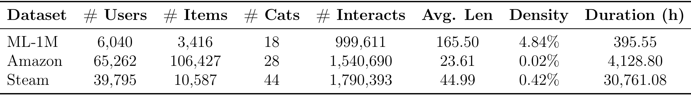
Table 2 显示三个数据集的差异不只是规模。ML-1M 用户数 6,040、平均长度 165.50、密度 4.84%，是相对稠密且长历史的电影评分场景；Amazon 用户数 65,262、物品数 106,427、密度只有 0.02%，但时间跨度 4,128.80 小时，体现电商跨品类长周期浏览；Steam 平均长度 44.99、时间跨度达到 30,761.08 小时，说明游戏行为在长期尺度上延续。这个表是理解超参结果的基础：ML-1M 的长序列会生成更多 segment，但类别只有 18 个，存在较多重复兴趣；Amazon 序列较短却更稀疏、更异质，segment 更可能对应真实不同兴趣；Steam 时间跨度最长，但领域相对集中。若不看这个数据结构差异，后面 tau 和 rho 的最优点很容易被误读成普通调参偶然性。
主结果最直接。S2-CAR 在三个数据集的全部指标上都排第一。例如 ML-1M 上 R@10 为 28.74，高于第二名 BASRec 的 24.75，相对提升 16.12%；Amazon 上 MRR@5 为 2.30，高于 TLSRec 的 1.73，相对提升 32.95%；Steam 上 R@10 为 14.41，高于 BASRec 的 13.41，相对提升 7.46%。这些数字说明 S2-CAR 的收益不是只发生在长序列电影数据，也覆盖了稀疏电商和游戏场景。
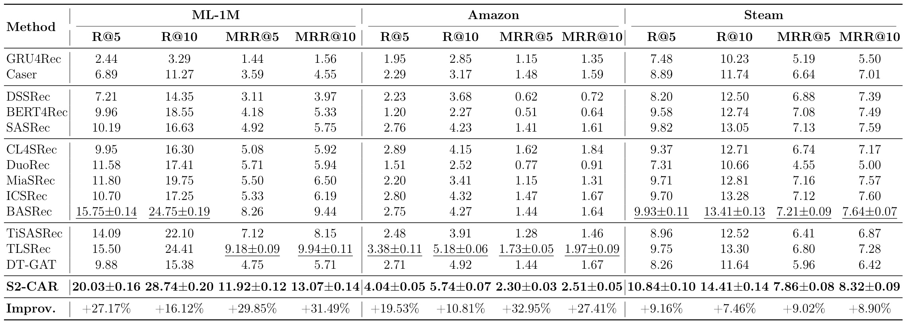
Table 4 里值得分开看两个结论。第一，时间感知或 session 方法并不是没有效果：TiSASRec 在部分数据集超过 SASRec，TLSRec 在 Amazon 上是强 baseline，说明时间信息和 session 结构确实有价值。第二，S2-CAR 的优势比这些方法更稳定，因为它同时解决边界和容量问题。Amazon 上的提升最大，尤其 MRR@5 和 MRR@10，说明在稀疏且类别异质的电商日志中，准确识别意图边界能显著改善 top-rank 排序；ML-1M 的提升也大，说明即使平均长度很长、类别较少，动态压缩和层次监督仍能缓解中段信号被埋没；Steam 的提升较小但一致，说明在领域更集中的游戏行为中，方法不会因为边界收益较弱而退化。表中所有候选都使用 full-catalog ranking，不是 sampled negative，因此这些提升更接近真实推荐排序场景。
作者还验证 Soft-TPP 是否可以脱离完整 S2-CAR 作为插件使用。做法是把 TPP 边界嵌入接到 CoSeRec、SURGE、DiffuRec 三个不同类型 backbone 的输入中，其他结构不变。如果提升只来自 HIE 或训练目标，那么这个插件实验不应稳定有效；但结果显示三类 backbone 在三个数据集上都有正提升。
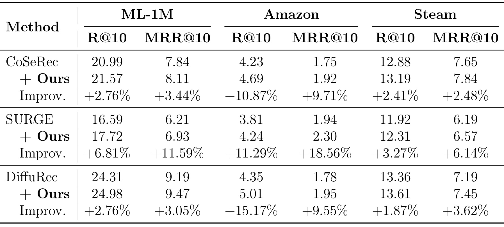
Table 5 的细节说明 Soft-TPP 更像一种结构先验。CoSeRec 接入后在 Amazon R@10 从 4.23 到 4.69，提升 10.87%；SURGE 在 Amazon MRR@10 从 1.94 到 2.30，提升 18.56%；DiffuRec 在 Amazon R@10 从 4.35 到 5.01，提升 15.17%。这些 backbone 的建模机制不同：CoSeRec 偏增强对比，SURGE 偏图结构，DiffuRec 偏扩散式序列建模。共同提升意味着边界信号不是某个 architecture trick，而是给序列 token 增加了“这里是否发生兴趣阶段转换”的可迁移信息。更有意思的是 Amazon 提升普遍最大，这和 Table 2 中电商稀疏、跨品类、时间跨度长的特征一致。
消融实验把方法章的模块逐个拆掉。完整 S2-CAR 在 ML-1M/Amazon/Steam 上 R@10 分别为 28.74、5.74、14.41。去掉 HIE 后降到 26.38、4.82、13.13；去掉 SIE 更严重，说明服务路径仍是主干；把 TPP 换成固定切分或完全去掉 TPP 都明显下降；去掉 MS-RoPE、Ldiv、动态槽位、对比对齐也都会损伤性能。
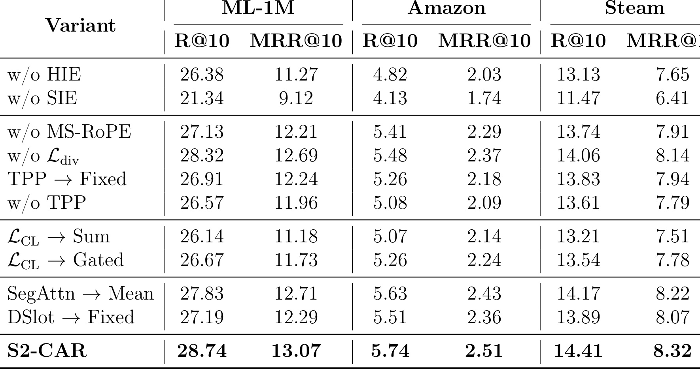
Table 6 可以对应回方法模块。w/o SIE 的下降最大，说明因果序列读出 $u$ 仍是核心，HIE 不能单独替代 next-item prediction。w/o HIE 也明显下降，说明 segment-level teacher 对中早期兴趣有补偿作用。TPP→Fixed 和 w/o TPP 的下降证明时间类别边界不是普通 side information 可替代：作者还保留 temporal/category embeddings 做 w/o TPP，对比仍输给完整模型，说明 gain 不只是因为多加了类别和时间特征。LCL→Sum 和 LCL→Gated 都不如对比学习，说明把 z 直接融合进打分向量可能引入噪声；让 z 作为训练期几何正则更稳。DSlot→Fixed 低于完整模型，支持“slot capacity 应随 segment count 调整”这一主张。
超参分析分三组：对比 loss 权重 $\gamma$、压缩比例 $\rho$ 和边界阈值 $\tau$。作者没有把这些超参当成附录补充，而是在正文解释它们和数据集行为结构的关系。尤其 $\rho$ 和 $\tau$ 是方法语义的一部分：前者决定 segment 到 interest slot 的压缩强度，后者决定 energy retention 下降到什么程度才切新段。
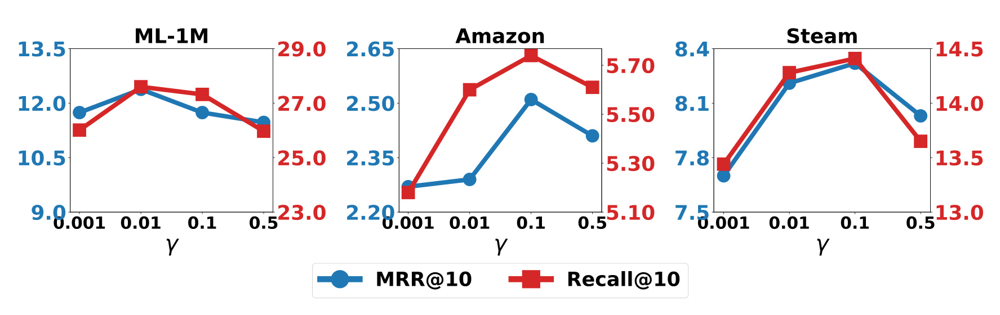
Figure 3 显示 $\gamma$ 不是越大越好。ML-1M 的最佳值在 0.01，Amazon 和 Steam 的最佳值在 0.1。当 $\gamma$ 太小，SIE 的 $u$ 得不到足够 HIE 结构监督，用户表示可能仍偏向短期序列末端；当 $\gamma$ 太大，对比项会压过主推荐目标，使模型过度追求跨路径对齐而损害 ranking fidelity。图里三组数据都是先升后降，说明 $L_{\mathrm{CL}}$ 的角色更接近辅助 regularizer，而不是可以替代 $L_{\mathrm{CE}}$ 的主任务。工程上这意味着，如果把 S2-CAR 接入业务模型，应先稳定主推荐 loss，再调对比权重，不能指望增强对比信号自动提升排序。
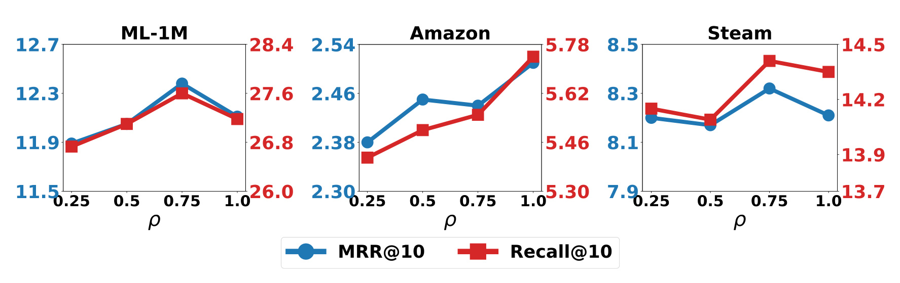
Figure 4 体现了复杂度自适应的核心。ML-1M 最优 $\rho$ 约在 0.75，Amazon 最优在 1.0，Steam 也偏高。论文的解释是：ML-1M 平均序列很长，Soft-TPP 容易产生较多 boundary-delimited segments，但类别数只有 18，很多 segment 可能是同一兴趣的周期性复现，因此需要压缩；Amazon 序列短、类别更异质，segment 更可能对应真实不同兴趣，过度压缩会合并有用的多样性；Steam 虽然时间跨度长，但游戏领域相对集中，最优点介于两者之间。这个图把 $U_{\mathrm{eff}}=\min(\lceil\rho K\rceil,U_{\max})$ 从公式变成可观察证据：slot 数量不能固定，也不能机械等于 segment 数。
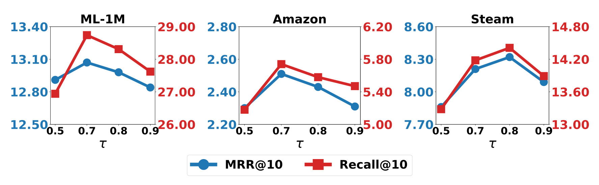
Figure 5 则说明边界阈值 $\tau$ 和数据集时间密度有关。$\tau$ 小表示只有能量衰减很严重才切段，segment 更粗；$\tau$ 大表示轻微能量下降也能触发边界，segment 更细。ML-1M 中大量同日评分使 $r_i$ 常接近上界，需要较高 $\tau=0.8$ 才能抓到真正 phase change；Amazon 时间间隔和类别跳转更明显，$\tau=0.7$ 就足够，继续升高会制造过多虚假边界；Steam 的最优也接近 0.8，符合游戏兴趣阶段较稳定但序列跨度长的特点。这个结果也暴露了一个局限：S2-CAR 仍需要 dataset-specific threshold tuning，自动选择 $\tau$ 是后续值得做的方向。
效率结果回答的是双分支训练是否太重。S2-CAR 每 epoch 144 秒，慢于 SASRec 的 58 秒和 BASRec 的 71 秒，但它 7 个 epoch 收敛，总训练时间约 1,008 秒，反而低于 BASRec 的 1,846 秒和 ICSRec 的 1,584 秒。显存 11,375 MB，接近 BASRec 的 11,083 MB，低于 ICSRec 的 15,970 MB。Soft-TPP 预训练每 epoch 9 秒、5 epoch，总共 45 秒，是一次性开销。
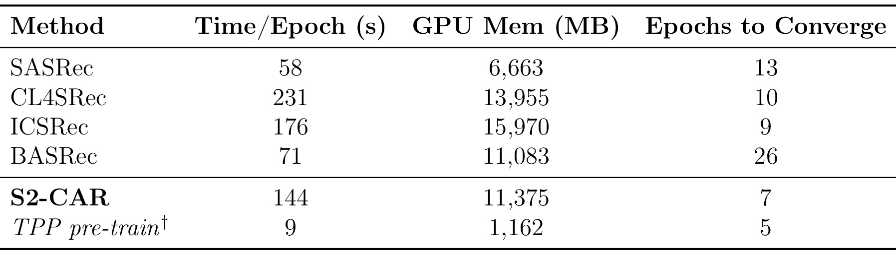
Table 7 的工程含义要分训练期和推理期看。训练期确实多了 HIE、cross-attention、diversity regularizer 和对比学习，所以每 epoch 比 SASRec 慢；但 S2-CAR 收敛 epoch 更少，整体训练时间没有不可接受。推理期更关键：HIE 分支被丢弃，预测仍是 $E_Vu$ 的 full-catalog scoring；Soft-TPP 已预训练冻结，边界生成复杂度是 $O(Nd)$，相对 Transformer 主体和全量 item softmax 不是主要瓶颈。若业务已有类别特征和时间戳，S2-CAR 的新增成本主要在离线训练和边界生成，不会把线上服务改成双塔或多分支重模型。
最后一组实验回扣引言里的中段信息问题。作者对 S2-CAR 做与 SASRec 类似的删除实验：随机删除 last segment 或 middle segment 的一半 item，观察 $\Delta$Recall@10。如果 S2-CAR 仍然忽略中段，删除 middle segment 应该不造成稳定下降；如果它确实利用了中段意图，删除后应该在各长度组退化。
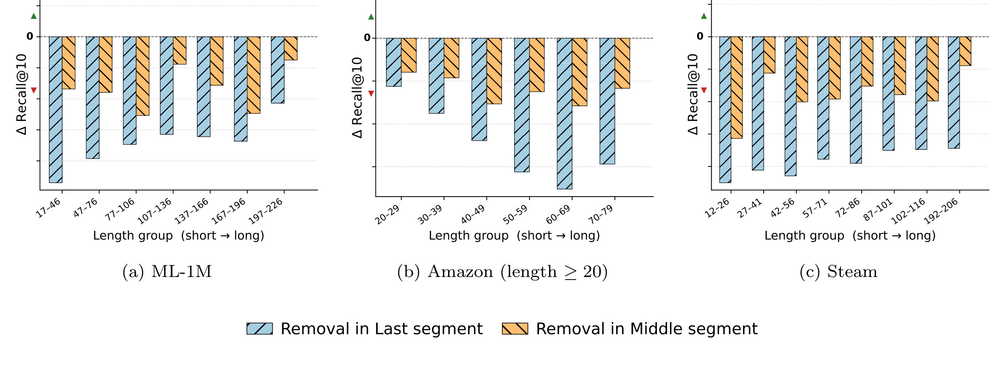
Figure 6 的 orange bars 在三个数据集全部长度组里都低于 0，说明删除 middle segment 会让 S2-CAR 性能下降；black bars 同样低于 0，说明 recent interactions 仍重要。这个结果与 Figure 1 中 SASRec 的现象形成对照：S2-CAR 不是牺牲短期兴趣去强行使用长历史，而是同时保留最后段和中段的可用信号。尤其在长序列组里，中段删除仍有负影响，说明 Soft-TPP 边界和 HIE 结构监督确实让历史中间的 intent-coherent segments 进入了最终用户表示。对业务来说，这类结果比平均 Recall 更有解释力，因为它回答了“长历史到底有没有被用起来”。
作者进一步做 boundary noise injection：在 fixed 48-hour segment 的头部或尾部插入随机异类 item，让各模型重新训练，并报告相对性能退化。这里故意不用 S2-CAR 自己的 TPP 边界来定义注入位置，避免实验和模型边界检测互相耦合。数值越接近 0，说明边界噪声越不容易破坏模型表示。
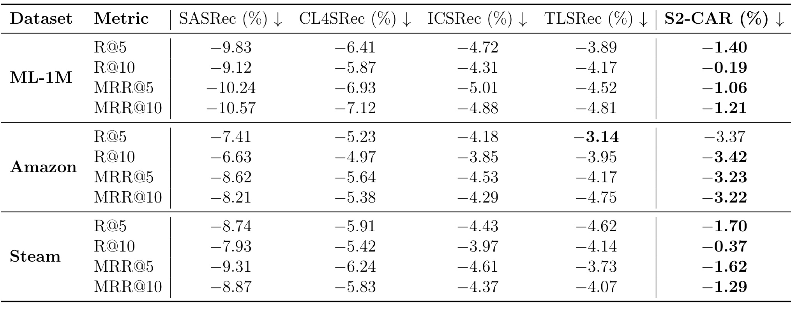
Table 8 中 S2-CAR 在多数指标上退化最小或接近最小。ML-1M 的 R@10 仅下降 0.19%，Steam 的 R@10 仅下降 0.37%，都远小于 SASRec、CL4SRec、ICSRec 和 TLSRec。Amazon R@5 上 TLSRec 略好于 S2-CAR，但整体看 S2-CAR 仍最稳。这个表说明边界噪声不会像在普通 causal encoder 中那样沿位置偏置扩散到全局表征，因为 S2-CAR 有显式边界和 segment-level 结构监督。它也解释了为什么 Table 4 的提升不只是平均性能上的巧合：模型在被故意插入跨类别干扰后，仍能更好地隔离噪声。
从实验设计看，Table 8 还有一个容易被忽略的控制点：噪声注入位置用固定 48 小时 segment，而不是 S2-CAR 自己预测的边界，因此结果没有把模型边界当成评测边界自我证明。这样的设置让表格更像外部扰动测试，能更可靠地说明显式边界和 HIE 监督提升了抗干扰能力。
4. 总结
S2-CAR 的主要贡献可以压缩成三句话。第一，它把意图切分从固定时间窗改成连续时间 latent energy retention，并用类别转移和用户历史类别分布调节 decay rate。第二，它不把 segment 数量机械等同于兴趣数量，而是通过 $\rho$ 和 $U_{\mathrm{eff}}$ 让 active interest slots 随行为复杂度变化。第三，它让 HIE 只在训练期当结构教师，线上仍走 SIE 的因果推断路径，降低了部署复杂度。这三个设计合在一起，针对的是序列推荐里很具体的痛点：中段历史并不是天然无效，而是经常因为边界错分和表示链路衰减而没有被模型用好。
我对这篇论文的判断是：它的实验证据比较完整，尤其主结果、plug-in、消融、效率和中段删除实验形成了闭环。Table 5 让 Soft-TPP 的价值不只依附于完整 S2-CAR；Table 6 说明 HIE、TPP、MS-RoPE、动态槽位和对比学习都有独立贡献；Figure 6 与 Table 8 又回到问题定义，证明模型确实更依赖中段信号并更稳健。相比只在 benchmark 上刷分的序列推荐论文，S2-CAR 的优势是“问题图 - 方法模块 - 反事实删除实验”对得比较齐。
工程上可以优先关注四个复现点。第一，业务日志必须有可靠 category 或可替代的 item semantic/co-occurrence 表征，否则 $\delta_i$ 的 context-adaptive decay 会失去重要输入。第二，$\tau$ 和 $\rho$ 不应照搬论文值，需要按业务时间密度、类别粒度和平均序列长度调参。第三，HIE 只服务训练，线上是否保留 Soft-TPP 边界生成需要评估延迟和缓存方式；长历史场景可提前离线生成 prefix 边界，近实时场景则要增量更新。第四，删除实验和边界噪声实验很值得在内部数据上复做，因为它们能直接判断模型是否真的改善中段历史利用，而不是只因整体模型容量变大而提升。
局限也比较明确。其一，类别信息是强依赖，跨业务或冷启动 item 类别不稳定时，Soft-TPP 的边界可能偏。其二，$\tau$ 是数据集级阈值，还没有做到用户级或场景级自动适应。其三，HIE 训练期增加约 1.7 倍 Transformer 参数量和更高显存，虽然推理期可丢弃，但大规模训练仍需成本评估。其四，实验只覆盖电影、电商和游戏三个公开数据集，尚未验证新闻、短视频、搜索广告等更强实时反馈场景。其五，论文没有发布官方代码链接，复现实验时需要重新实现 Soft-TPP 冻结、boundary flag 生成、HIE 对比监督和 full-catalog evaluation 细节。
后续值得跟进三条线。第一，把 $\tau$ 的选择从全局网格搜索改成可学习或 validation-free 的 adaptive threshold，让不同用户或不同品类有不同边界敏感度。第二，用 item 文本、图像或 graph co-occurrence 替代 category embedding，测试缺少清晰类目体系的推荐场景能否复用 Soft-TPP。第三，把 Figure 6 的中段删除协议推广成通用评测：不仅看整体 Recall/MRR，也看模型对 early、middle、last segments 的依赖曲线，这比单一平均指标更能暴露长历史推荐模型是否真正用到了历史信息。